DIR NOTE
Задачи
- Придумать концепцию для 4 роликов длительностью 30 секунд для социальных сетей:
- Runing
- Fitnes
- Padel
- Sporwear
- Уточнить как будут выглядеть версии для экранов:
- Runing + Fitnes
- Padel + Sporwear
Интро
Спорт не всегда начинается с цели, тренировок на пределе возможностей. Иногда с желания двигаться и быть частью этой культуры. Я хочу показать, что SUNO — проводник в этом пути. Для бренда спорт существует не как испытание на предел, а как ощущение свободы, где технология, комфорт и эстетика слившись вместе помогает получать удовольствие от движения.
Мы не снимаем спорт как испытание. Мы снимаем удовольствие от движения, когда находишь свой ритм, а технология просто помогает тебе не отвлекаться от этого.
Поэтому в SS27 мы хотим показать не сам спорт, а то, что человек чувствует. Импульс, концентрацию, лёгкость, энергию, контакт с собственным телом. Нам интересно поймать тот момент, когда ты находишь свой ритм и просто получаешь удовольствие от того, что делаешь.
Approuch
Каждый ролик становится небольшой историей. Она строится не вокруг спортивного результата, а вокруг движения, человека и эстетики отдельного вида спорта.
Герои не выглядят профессиональными атлетами из спортивной рекламы. Здесь нет акцента на поте, превозмогании и боли. В центре остаются естественное движение, характер человека, комфорт и ощущение себя в одежде.
Одежда и тело становятся единым целым. Движение помогает раскрыть посадку, силуэт и детали вещей.
Визуальный язык также обращается к fashion. Спорт становится частью образа жизни, а внимание переходит от результата к пластике, “позированию”, характеру и живости героя.
Очень важно и хочется, чтобы герой в кадре был настоящий и живой, не ощущался как статичная модель без эмоций.
Съёмка планируется в две смены. За это время создаются четыре основных ролика. На их основе в монтаже собираются дополнительные версии для экранов и разных форматов. За счет нескольких смен, мы можем экспериментировать с различными техническими средствами и еще сильнее разнообразить визуальный подход.
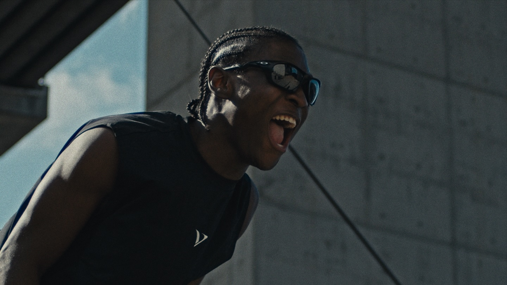
VISION & TOON
Камера большую часть времени остаётся наблюдателем. Основной инструмент съёмки это длиннофокусная оптика. Ручная камера и широкоугольные объективы появляются только в отдельных моментах, когда нужно усилить ощущение движения или найти необычный ракурс.
Стедикам, кран и роборука создают разные характеры движения. Общий визуальный язык объединяет четыре ролика, а разные системы движения камеры позволяют каждому направлению получить своё решение.
Высокая частота съёмки ключевая составляющая. Рапиды позволяют задержаться на коротких моментах и рассмотреть движение ткани, эмоцию или отдельную фазу движения.
Вспышки света фиксируют отдельные доли секунды и добавляют изображению ощущение фотографии.
Не уходим в грубый дарк визуал, наш референс fashion midle+ сегмента. Мы позволяем себе низкий ключ, грубые текстуры, но оставляем акцент на героях и одежде. Тёмная и тяжёлая спортивную эстетику здесь не строим, изображение должно рассказывать ровно противоположное. Наше направление это баланс ощущения натуральности и “кинематографичной”.
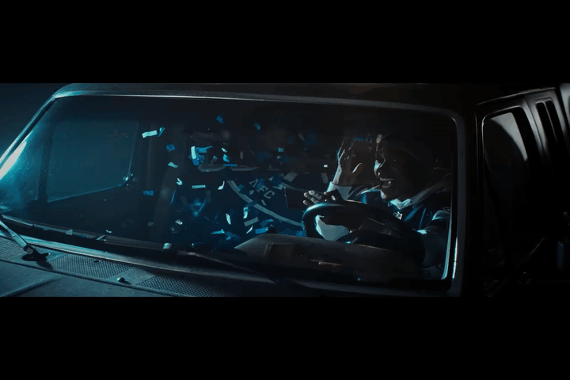
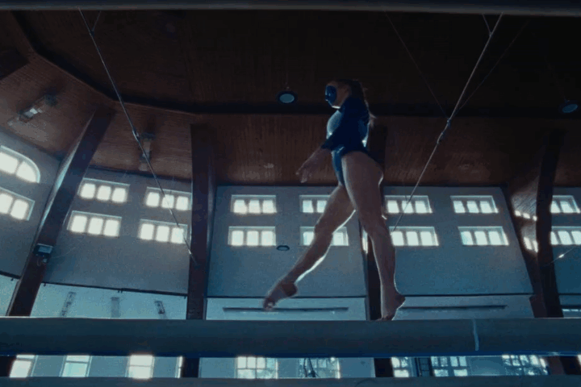
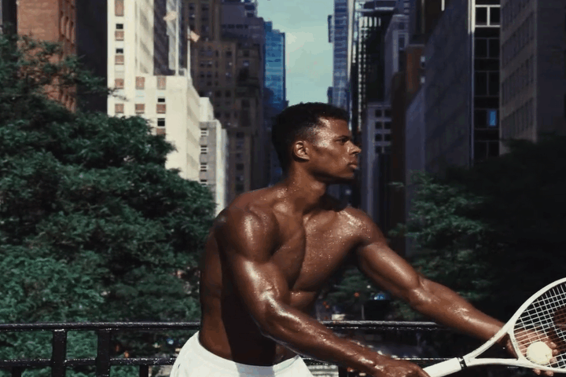
SYNOPSIS
Sportwear выходит за рамки тренировки. Спорт становится частью повседневной жизни.
В центре остаётся человек. Его движение показывает характер одежды. Ткань повторяет движение тела. Она растягивается, возвращается в форму и сохраняет силуэт.
Не строим сложную сюжетную линию. Не ведём героя к конкретному результату.
Камера наблюдает за тем, что происходит в течение этого момента. Разминка, движение, короткий отдых, концентрация, эмоции. Эти детали создают ощущение “документальности” происходящего.
Технологичность одежды становится частью истории. Мы не объясняем свойства ткани напрямую. Мы показываем их через движение, свет и контакт с телом.
Sportwear соединяет функциональность, технологичность и fashion. Одежда работает вместе с человеком и остаётся частью его образа.
RUNNING
Движение и технологичность
В беге человек становится частью большой технологичной среды.
LIDAR позволяет переводить реальное пространство в пространство из облака точек. Переход происходит прямо внутри движения и становится частью визуального языка ролика.
Камера чаще наблюдает за героем со стороны. Масштаб локации подчёркивает его движение внутри пространства.
Помимо самого бега, в кадре появляются разминка, отдых, эмоции и детали одежды. Эти моменты создают полноценное ощущение тренировки и постепенно раскрывают характер героя.
Локация становится частью идентичности бега и работает не только как фон.
Подчеркивает и создаем дополнительную динамику и развитие за счет движения света.
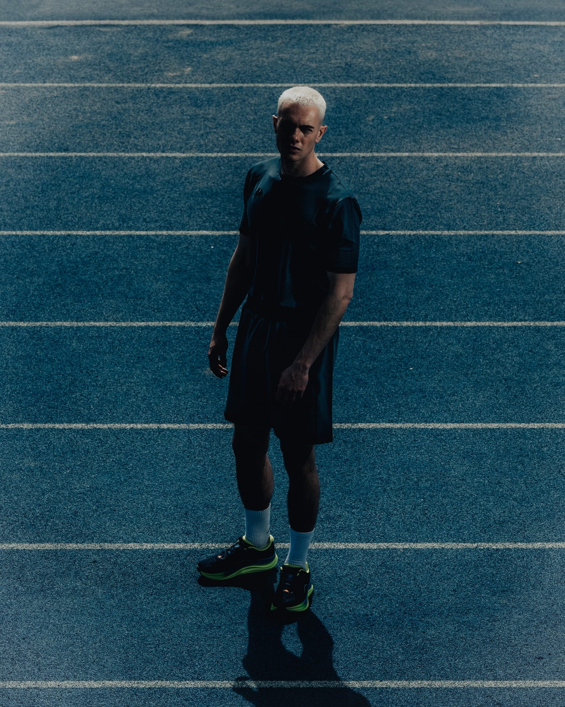
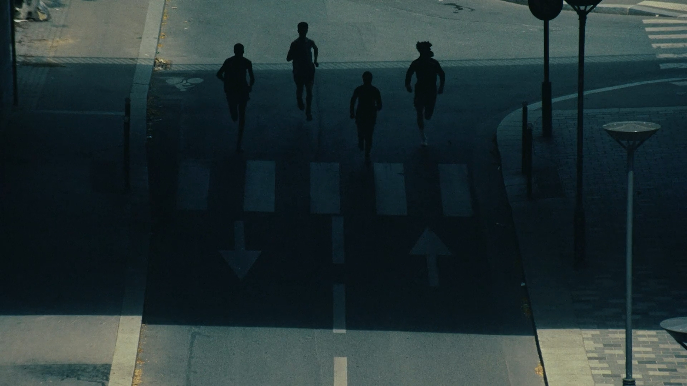

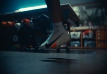
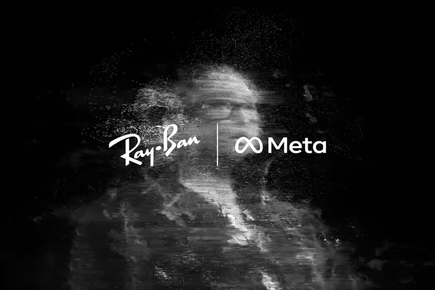
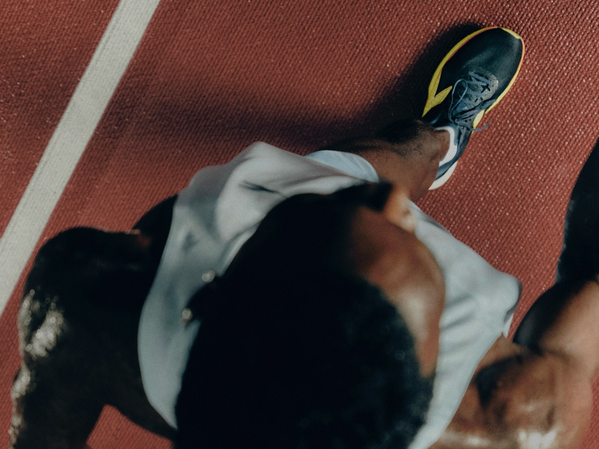
PADEL
Герой и геометрия
Основой визуального языка становится геометрия корта.
Линии и разметка формируют композицию кадра. Съёмка через стекло позволяет смотреть на игру с необычных точек.
Макрооптика приближает камеру к самому движению. Она проходит вдоль рук, ракетки и ног прямо перед ударом.
Герой постоянно взаимодействует с геометрией пространства. Движение и форма корта становятся частью одной композиции.


{kind=link}
{kind=link}
{kind=link}
{kind=link}
{kind=link}
{kind=link}
{kind=link}
{kind=link}
{kind=link}
{kind=link}
{kind=link}
{kind=link}
{kind=link}
{kind=link}
{kind=link}
{kind=link}
{kind=link}
{kind=link}
{kind=link}
{kind=link}
{kind=link}
{kind=link}
{kind=link}
{kind=link}
SPORTWEAR
Свобода и жизнь
Здесь визуальный язык становится ближе к fashion.
В центре находятся модели, их движение и позирование. Одежда раскрывается через силуэт, пластику и характер человека.
Спорт становится частью повседневной жизни. Он не задаёт жёсткую структуру действия, а становится естественной частью образа.
Студийное пространство строится вокруг практических эффектов.
Камера проходит сквозь воду на высокой скорости. Замедленная съёмка фиксирует движение воды и одежды. Отдельные пролёты вдоль тела позволяют рассмотреть детали.
Вода появляется на полу и создаёт отражения. В некоторых сценах она исчезает, открывая CG пространство. Динамический свет связывает разные состояния внутри одного ролика.
{kind=link}
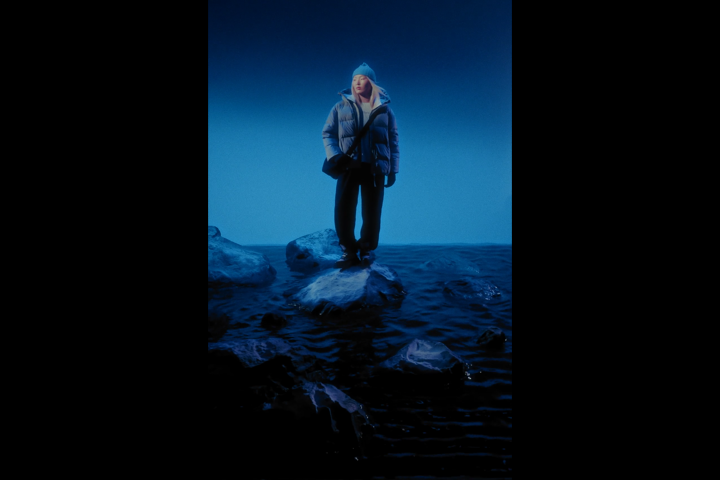
{kind=link}
{kind=link}
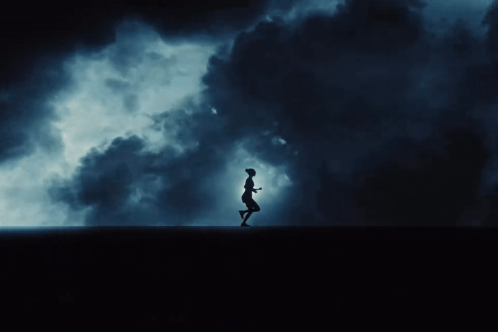
{kind=link}
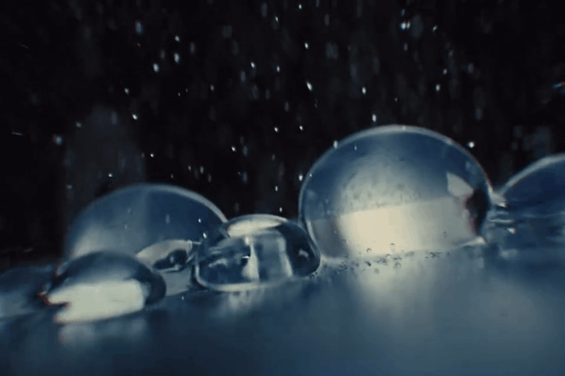
FITNES
Движение и эстетика
Фитнес часто показывают через упражнения и физическую нагрузку. Здесь акцент смещается на движение и эстетику.
Для героев создаётся пространство со световой платформой и потолком.
Ролик снимается на роборуку. Камера проходит длинные фазы движения, внутри которых несколько действий соединяются через match cut.
Одно движение переходит в другое. Разные упражнения складываются в единую визуальную последовательность.
{kind=link}
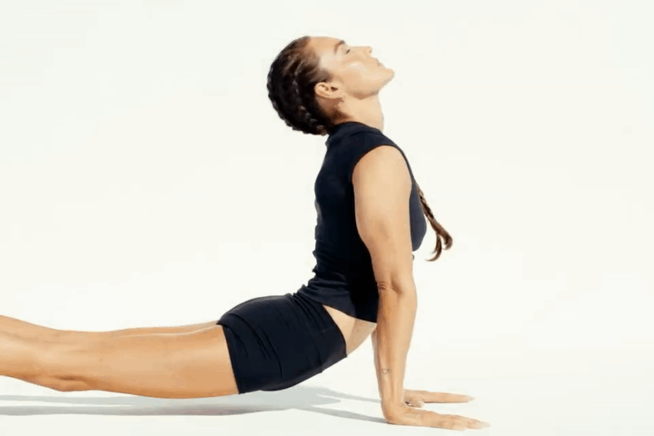
{kind=link}
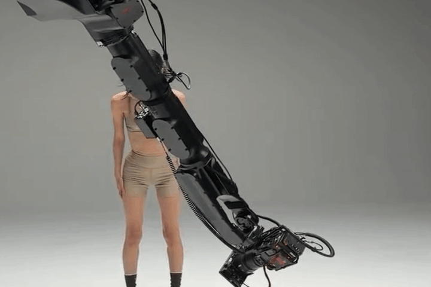
{kind=link}
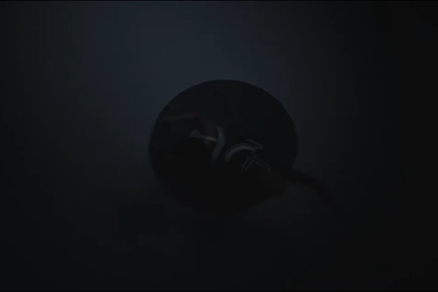
{kind=link}
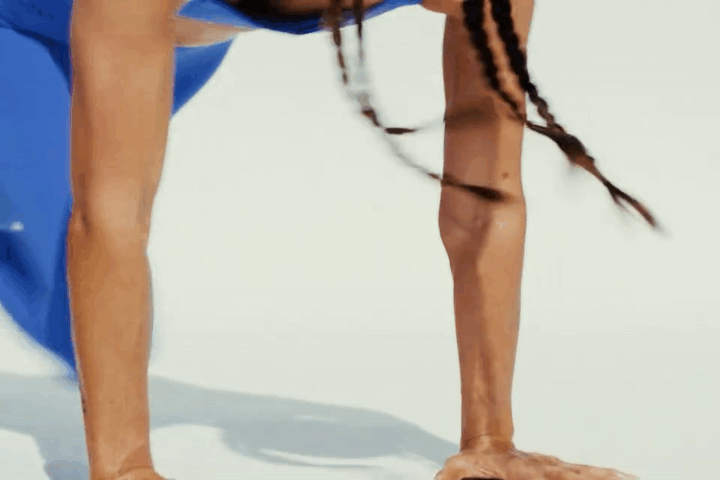

{kind=link}
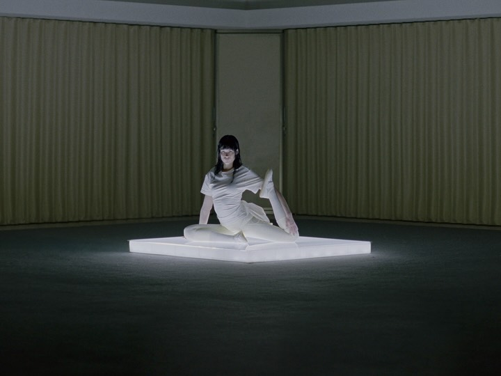
LOCATION
Бег - Стадион ЦСКА

Падел - Крытый корт или имитация корта
Фитнес - студия застройка
Streetwear - дарк рум с водой + CG фона
{kind=link}
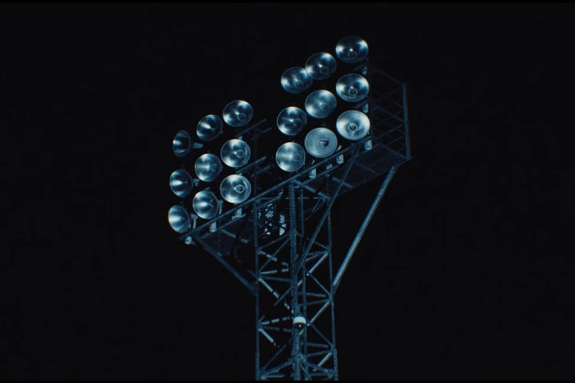
CAST & STYLING
Не хочется нагнетать слишком много игры, хочется живых и настоящих людей в кадре.
Важно сохранить ощущение реального спорта и одновременно дать героям достаточно индивидуальности, чтобы они воспринимались не только как спортсмены, но и как носители образа SONU.
При этом каждый герой должен иметь запоминающийся образ. Он должен соответствовать уровню одежды и характеру бренда.
SOUND & EDIT
Ритм меняется вместе с действием. Быстрые фрагменты чередуются с паузами и наблюдением.
Рапиды позволяют задержаться на отдельных моментах. Они показывают движение ткани, жест, взгляд или короткую эмоцию.
Звук помогает почувствовать пространство, эхо, гул. Мы слышим шаги, дыхание, движение одежды и окружающую среду. Это должен быть хороший современный семпл и саундизайн, без банальных акцентах на движениях и барабанов.
CONCLUSION
Центральной частью спорта всё равно остаются человек, движение и ощущение себя. Именно это отражает подход SONU.
Мне было интересно работать с этой идеей, миссией и позиционированием бренда. Особенно интересно было соединить их с моей визуальной стилистикой и собственным видением.
Мы видим большой потенциал в том, чтобы через простые и живые моменты показать характер бренда. Не объяснять его напрямую, а дать почувствовать через героя, движение, одежду и пространство.
Спасибо за возможность стать его частью!
{kind=link}
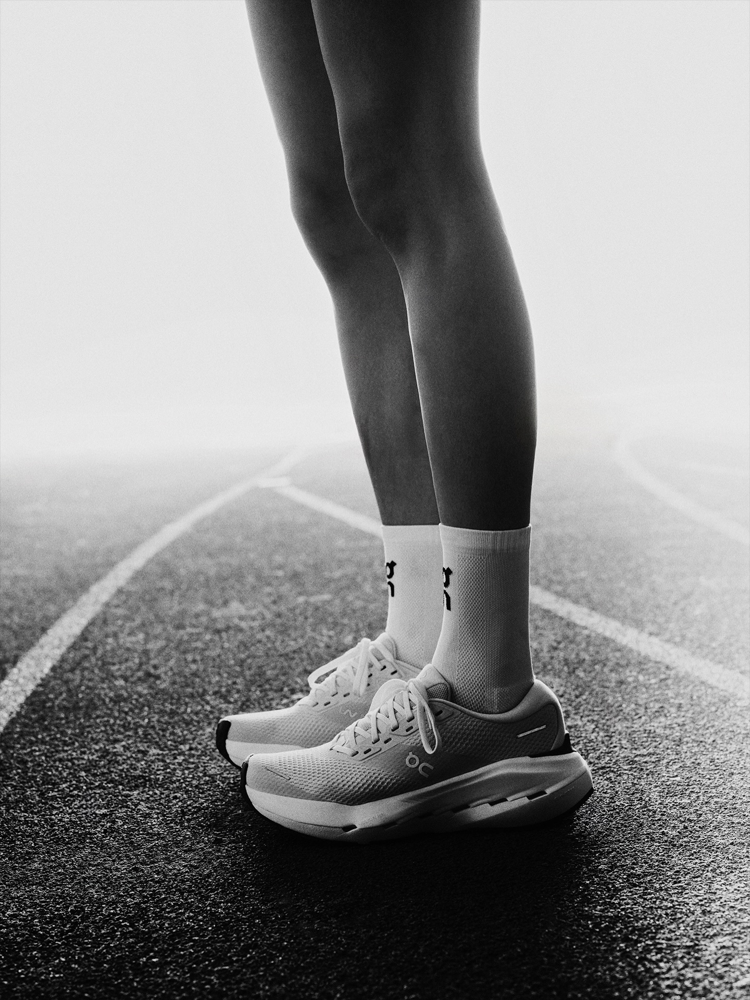
{kind=link}
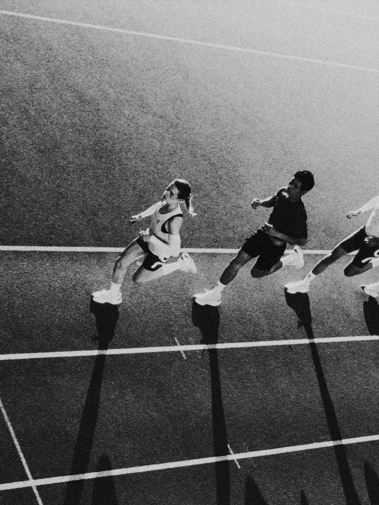
{kind=link}
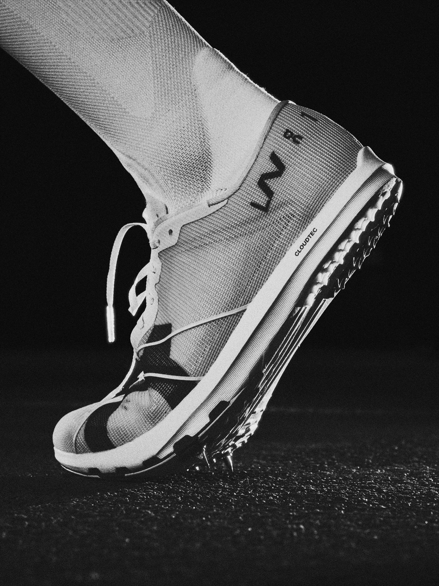
{kind=link}
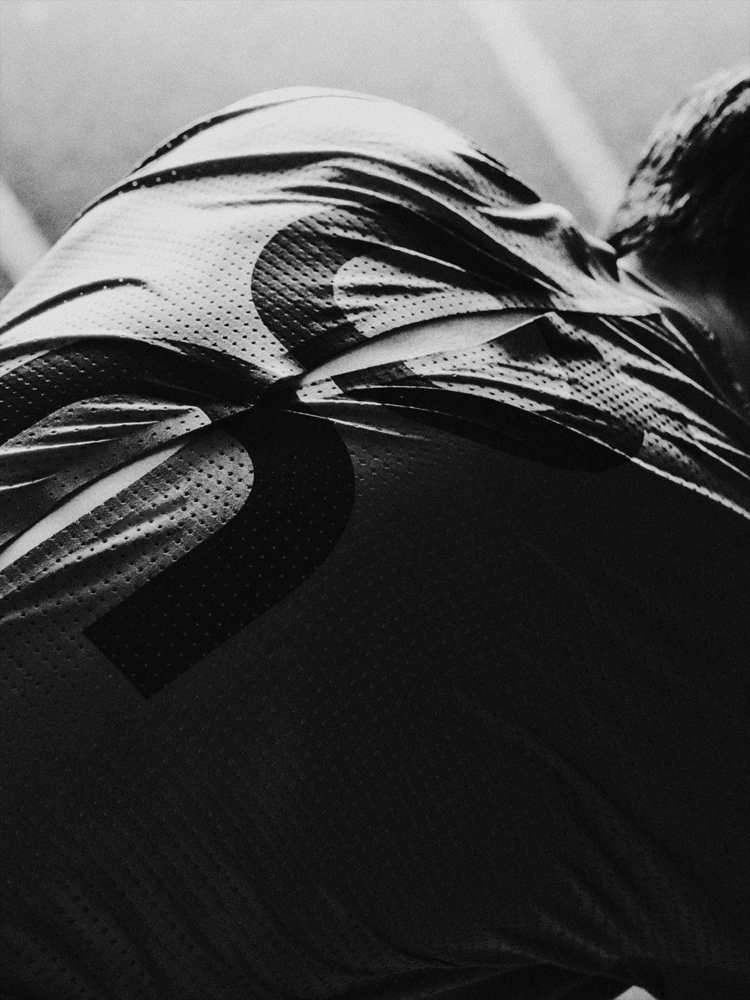
{kind=link}
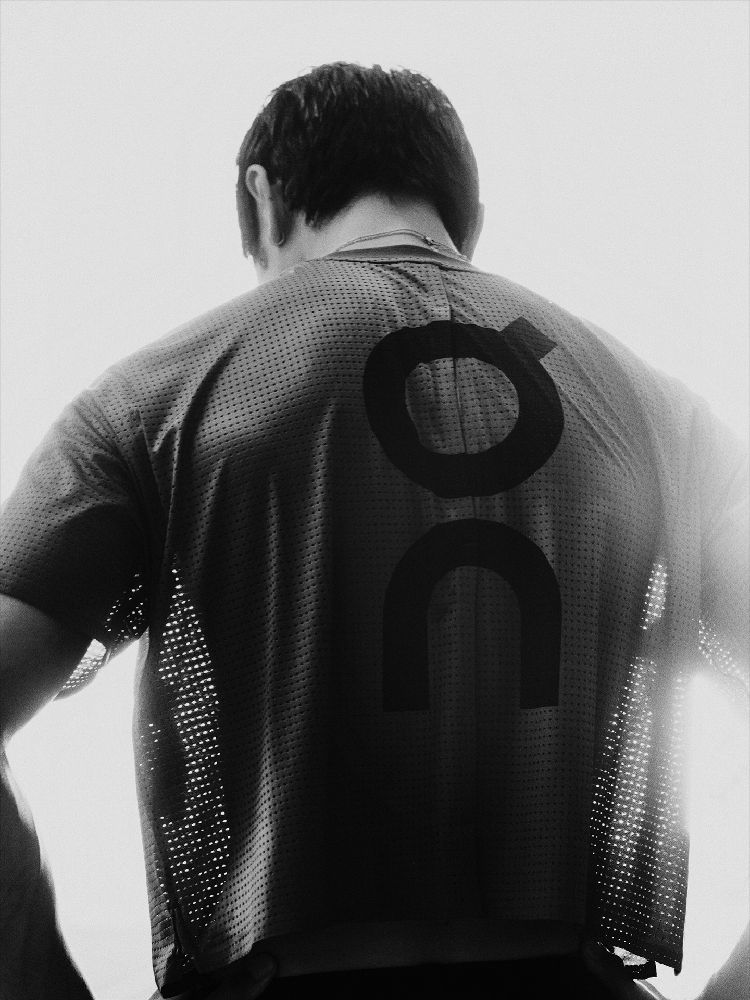
{kind=link}
{kind=link}
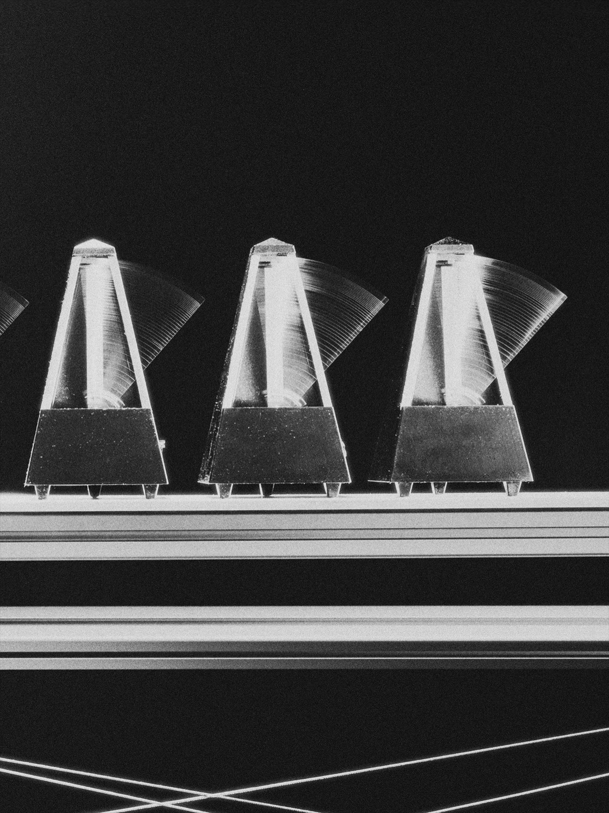

{kind=link}
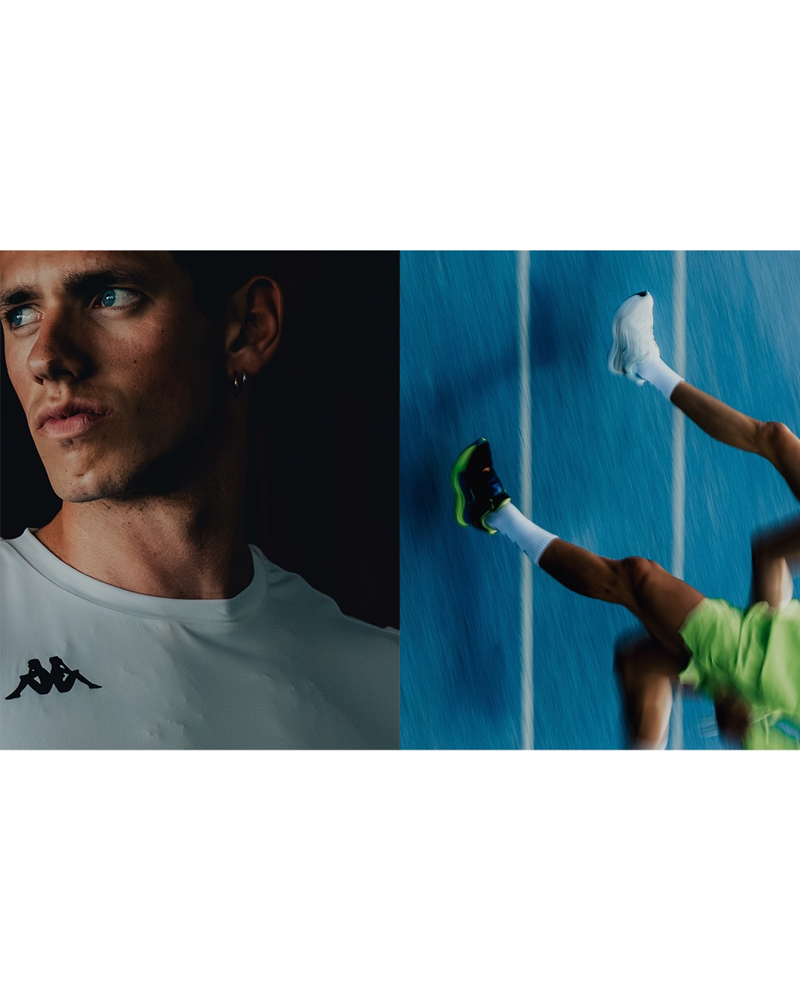
{kind=link}
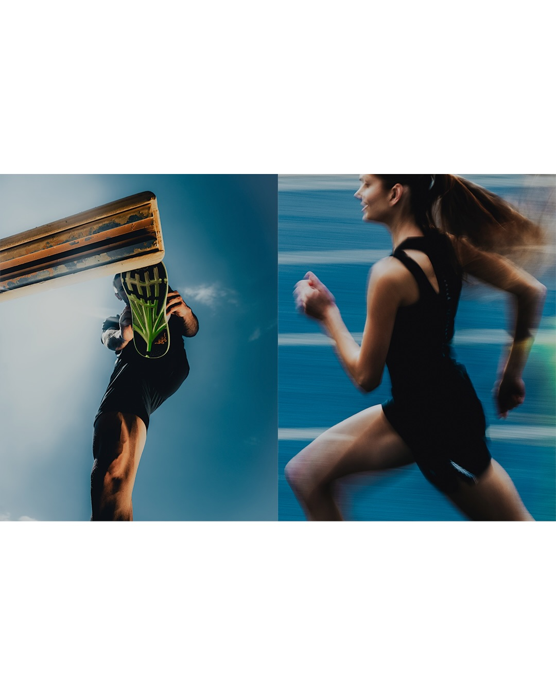
{kind=link}
{kind=link}
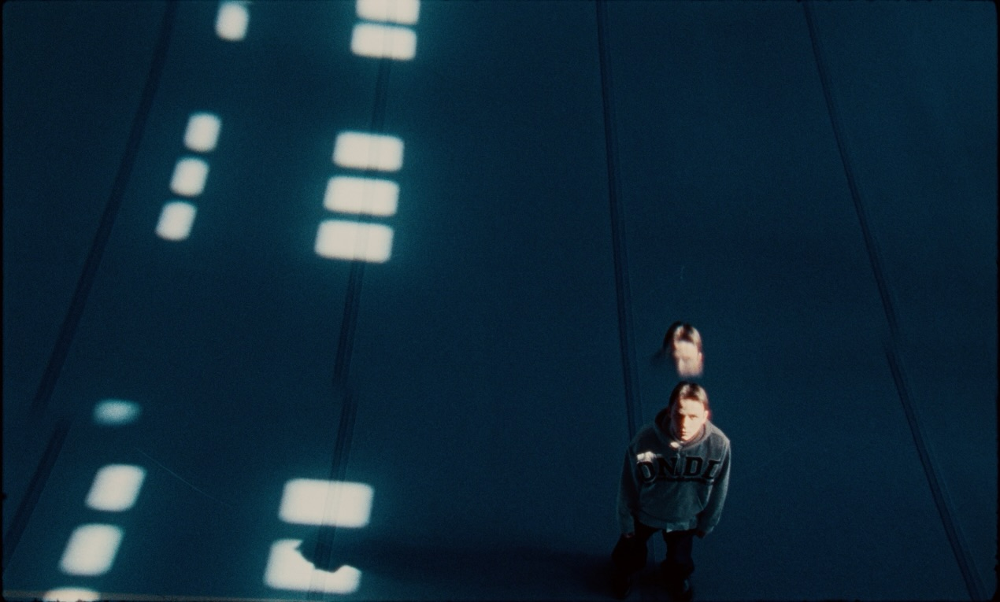
{kind=link}
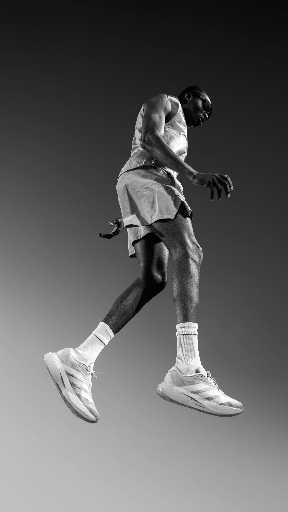